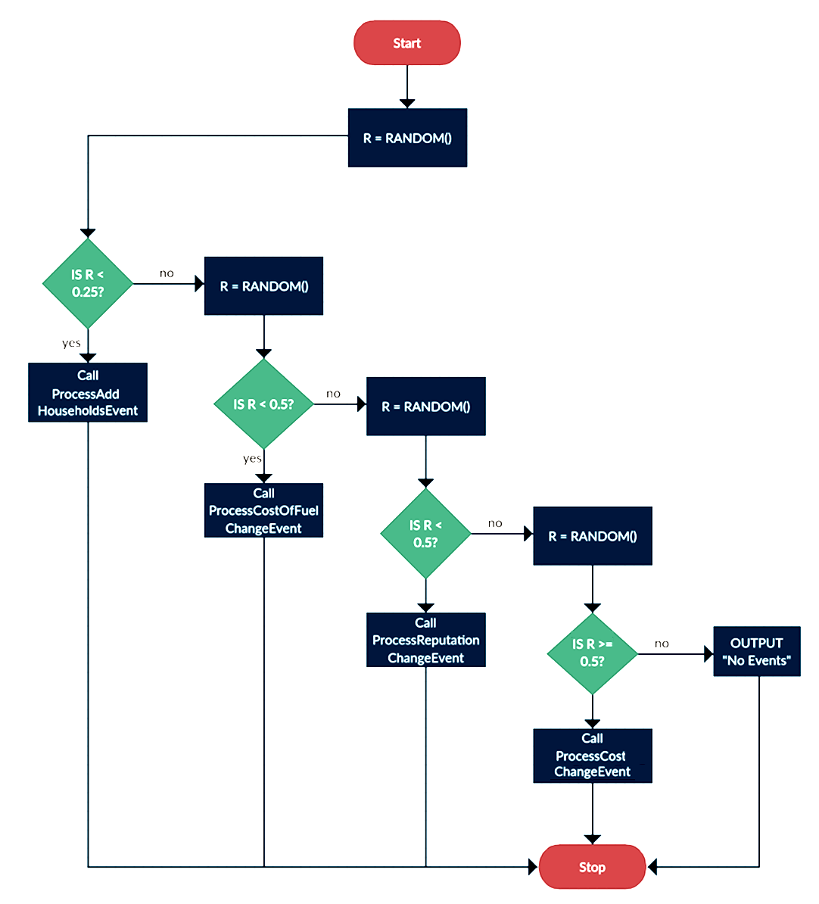

Programming Tasks |
An Electronic Answer Document (EAD) is provided for all questions/tasks. Save this file to an accessible location before you start.
| The following questions require you to open the skeleton program and make modifications to it. |
|---|
Jump to:
Task 1 | Task 2 | Task 3 | Task 4 | Task 5 | Task 6 | Task 7 |
Task 8 | Task 9 | Task 10 | Task 11 | Task 12 | Task 13 | Task 14 | Task 15
Task 1 (max. 3 marks)
This question refers to the subroutine ModifyCompany within the Simulation class.
Currently, the user is prompted to enter a value of 1, 2 or 3, but if nothing is entered by the user, the program responds by outputting a blank line.
Change the subroutine ModifyCompany to present the user with an additional choice: "C. Cancel". If the user enters anything other than 1, 2, 3 or an upper-case 'C', the menu should be redisplayed repeatedly until either 1, 2, 3 or C is selected. If 1, 2 or 3 is entered, ModifyCompany should behave as normal. If an upper-case 'C' is entered, the program should output 'Operation Cancelled', and ModifyCompany should return without executing any additional code.
Test that the changes you have made work:
- run the Skeleton Program
- leave the first prompt blank, to indicate a normal-sized settlement
- enter D at the next prompt for default companies
- enter 3 for 'modify company'
- enter 'AQA Burgers' when prompted for a company name
- enter 'X' at the first prompt of the 'modify company' submenu
- enter 'C' at the second prompt of the 'modify company' submenu
| Evidence that you need to provide: |
|---|
|
Task 2 (max. 3 marks)
This question refers to the subroutine GetRandomLocation within the Settlement class.
This subroutine generates a random location within the bounds of the settlement that is used to position a new household. Currently, there is no mechanism for ensuring that a new household is not assigned the location of an existing household.
Change the subroutine GetRandomLocation to ensure that only unoccupied locations are returned. Prior to returning the location, a check should be made to determine whether the location is already occupied by a household. If it is already occupied, a new location should be generated, repeatedly if necessary.
Test that the changes you have made work:
- modify the Settlement constructor in the following ways:
- change XSize = 1000 to XSize = 3
- change YSize = 1000 to YSize = 3
- change StartNoOfHouseholds = 250 to StartNoOfHouseholds = 8
- run the Skeleton Program
- leave the first prompt blank, to indicate a normal-sized settlement
- enter D at the next prompt for default companies
- enter 1 for ‘display details of households’
| Evidence that you need to provide: |
|---|
|
Task 3 (max. 6 marks)
This question refers to the subroutine DisplayEventsAtDayEnd within the Simulation class.
Currently, there is a 25% chance of an event occurring when an end of day is run (which calls the DisplayEventsAtDayEnd subroutine). Modify the subroutine so that the following logic applies instead:
NB The function RANDOM() returns a real number from 0 to 1.
Test that the changes you have made work:
- run the Skeleton Program
- leave the first prompt blank, to indicate a normal-sized settlement
- enter D at the next prompt for default companies
- enter 6 for 'advance to next day'
- repeat until each of the events (including no events) have been triggered
| Evidence that you need to provide: |
|---|
|
Task 4 (max. 6 marks)
This question refers to the subroutine ProcessAddHouseholdsEvent and the DisplayEventsAtDayEnd subroutine within the Simulation class.
Modify the subroutine ProcessAddHouseholdsEvent in the Simulation class. Rename the subroutine to ProcessAddRemoveHouseholdsEvent and all calls to it so that they use the new identifier. Instead of just adding 1-4 houses to the settlement, there should be a 30% chance that 1-4 houses will leave the settlement instead. The message displayed by the subroutine should be changed so that when houses are removed, it says removed from instead of added to.
Modify the subroutine DisplayEventsAtDayEnd in the Simulation class. The subroutine should always call the newly modified subroutine ProcessAddRemoveHouseholdsEvent.
This question refers to the subroutine Run within the Simulation class. Currently, when modifying a company, the user needs to enter a company name in full, for which they must either remember it or scroll up the console window to see it previously displayed. Change the subroutine Run so that when the user enters option 3 from the main menu (modify company), they are presented with a numbered list of names of companies. The first company to be displayed in the list should be displayed next to a number 1, even though its index in the Companies data structure will be 0. You should include a range check and a type check for the entry of the company number. When the user enters the number next to the company name, the program should respond in the same way as it would have done had the company's name been entered. Entering the company's name should no longer be effective, and the input message should read 'enter the number next to the company you wish to modify'. Test that the changes you have made work: This question refers to the subroutine ProcessDayEnd in the Simulation class; CalculateDailyProfitLoss, GetDetails, NewDay and a new subroutine, AddDelivery in the Outlet class, and a new subroutine, GetNearestOutlet in the Company class. Currently each household has a random chance of eating out. Some of the households that do not eat out will order deliveries instead. For each household that does not eat out, then there will be a 50% chance that they will get a delivery. Modify the NewDay subroutine in the Outlet class to initialise the value of the new protected attribute DeliveryCosts to 0.0. Modify the CalculateDailyProfitLoss subroutine in the Outlet class to also subtract the DeliveryCosts from the daily profit/loss calculation. Modify the GetDetails subroutine in the Outlet class to also display the DeliveryCosts value. Create a new subroutine called AddDeliver in the Outlet class which takes two parameters, Distance and FuelCost, and then adds a visit to the outlet and adds Distance * FuelCost to the DeliveryCosts attribute. Create a new subroutine called GetNearestOutlet in the Company class which takes two parameters, X and Y, and returns the Outlet object of the nearest outlet and the distance to it. Update to AddVisitToNearestOutlet use the new GetNearestOutlet subroutine instead of duplicating code. Modify the ProcessDayEnd subroutine in the Simulation class so that if the household does not eat out then there is a 50% chance that it will order a delivery from the nearest restaurant. If there is a delivery then call the new AddDelivery subroutine for the relevant outlet and pass the distance to the Household and FuelCostPerUnit as arguments. Test that the changes you have made work: This question refers to the subroutines DisplayMenu and
Evidence that you need to provide:
Task 5 (max. 7 marks)
Evidence that you need to provide:
Task 6 (max. 8 marks)
Evidence that you need to provide:
Task 7 (max. 3 marks)
Currently, the program allows the user to advance the simulation for multiple days only by repeatedly selecting option 6 from the menu.
Change DisplayMenu to include an additional option: '5. Advance'.
Change Run so that if option 5 is selected, the user is prompted for the number of days they wish the simulation to advance. This number, which does not require validation, will be the number of times that the subroutine ProcessDayEnd is called.
Test that the changes you have made work:
- run the Skeleton Program
- leave the first prompt blank, to indicate a normal-sized settlement
- enter D at the next prompt for default companies
- enter 5 for 'advance'
- enter 3 when asked for a number
| Evidence that you need to provide: |
|---|
|
Task 8 (max. 3 marks)
This question refers to the subroutine IncrementVisits of the Outlet class.
Currently an outlet could receive more visits than their capacity, this is not the intention of the capacity in the model which is meant to simulate how many visits per day each outlet can deal with.
Change IncrementVisits so that the visit is only made if the outlet has capacity, otherwise there will be no visit and a reputation penalty of 0.05. Add suitable output messages stating that the capacity has been reached and what the capacity is.
Test that the changes you have made work:
- run the Skeleton Program
- leave the first prompt blank, to indicate a normal-sized settlement
- enter D at the next prompt for default companies
- enter 6 for 'advance to next day'
- enter 2 for 'display details of companies'
| Evidence that you need to provide: |
|---|
|
Task 9 (max. 4 marks)
This question refers to the subroutine ProcessDayEnd in the Company class, as well as a new subroutine, CloseAllOutlets, also in the Company class.
Currently, a company can continue operating irrespective of how far below zero their balance falls.
Create a new subroutine called CloseAllOutlets, in the Company class, which iterates through all outlets belonging to the company, and closing them with a call to CloseOutlet.
Modify the subroutine ProcessDayEnd in the Company class, so that immediately before the return statement, the value of Balance is checked. If it is below zero, a call to CloseAllOutlets is made, and a message is output to notify the user that all outlets have closed.
Test that the changes you have made work:
- run the Skeleton Program
- leave the first prompt blank, to indicate a normal-sized settlement
- leave the second prompt blank, to indicate user-defined companies
- enter 1 when asked for a number of companies
- enter the company name 'Bankrupt Burgers'
- enter a starting balance of 1000
- enter 2 to indicate a family restaurant
- enter 6 in the main menu, 'advance to next day'
- enter 2 in the main menu, 'display details of companies'
| Evidence that you need to provide: |
|---|
|
Task 10 (max. 8 marks)
This question refers to a new class, FoodTruck, as well as the subroutine OpenOutlet in the Company class.
Create a new class called FoodTruck, which inherits from the class Outlet. As well as the inherited subroutines and attributes, FoodTruck should include a new subroutine called Move. Movement should take place in a random direction, moving one 'square' in any of the main compass points (i.e. either XCoord or YCoord should change up or down by exactly 1).
You should validate the food truck’s movement, so that it is not permitted to leave the settlement as a result of its XCoord and YCoord values being beyond the settlement’s bounds. The truck should start in the same location as the outlet. The constructor for FoodTruck should take XCoord, YCoord, XSize and YSize of the outlet location and settlement size respectively as integers as parameters, then pass these to the superclass constructor along with a value of 10 for capacity. Settlement size should be passed through so that it is available inside FoodTruck.
Change the OpenOutlet subroutine within the Company class so that whenever a new outlet is opened for a restaurant, a new food truck is also created.
NB You will have to override one other subroutine in FoodTruck so that movement will be automatically implemented by the current code due to polymorphism.
.Test that the changes you have made work:
- run the Skeleton Program
- leave the first prompt blank, to indicate a normal-sized settlement
- leave the second prompt blank, to indicate user-defined companies
- enter 1 when asked for a number of companies
- enter the company name 'Taco Truck'
- enter a starting balance of 30000
- enter 1 to indicate a fast food restaurant
- enter 2 to display details of companies
- enter 6 to advance to the next day
- enter 2 to display details of companies
| Evidence that you need to provide: |
|---|
|
Task 11 (max. 5 marks)
This question refers to the subroutine GetIndexOfCompany within the Simulation class.
Currently, when a company is searched for using this subroutine, the whole company name is required in order to generate a match.
Change GetIndexOfCompany so that if the user enters a search term that is contained within the name of one company, the index of that company is returned. If the text is contained within the names of multiple companies, the user should be presented with all matching company names before being asked to type one of them in full in order to select it.
The subroutine should continue to be non-case-sensitive, and a search for a company that finds nothing, or an attempt to select a matching company that doesn't actually match one of the search results, should still return a value of -1.
Test that the changes you have made work:
- run the Skeleton Program
- leave the first prompt blank, to indicate a normal-sized settlement
- enter D at the next prompt for default companies
- enter 3 for 'modify company'
- enter a lower-case 't' for the company name
- type 'Paltry Poultry' when asked to type the name of a company
| Evidence that you need to provide: |
|---|
|
Task 12 (max. 3 marks)
This question refers to the subroutine CloseOutlet in the Company class.
Currently, closing an outlet incurs no expense on the part of the company.
Change CloseOutlet so that a company's balance decreases for each outlet that is closed. The cost of closing the outlet depends on both the type of the company and the capacity of the outlet being closed. Taking 'capacity' as being the number of seats in an outlet, the costs of closing an outlet are as follows:
Fast-food outlet: 75 per seat
Family outlet: 50 per seat
Named chef outlet: 150 per seat
Test that the changes you have made work:
- run the Skeleton Program
- leave the first prompt blank, to indicate a normal-sized settlement
- enter D at the next prompt for default companies
- enter 2 for 'display details of companies
- enter 3 for 'modify company'
- enter 'Paltry Poultry'
- enter 2 for 'close outlet'
- enter 4 when prompted for an ID
- enter 2 for 'display details of companies'
| Evidence that you need to provide: |
|---|
|
Task 13 (max. 5 marks)
This question refers to the subroutines DisplayMenu and Run in the Simulation class.
Currently, it is possible to add a company to a simulation, but not to remove one.
Change DisplayMenu to include an additional option: '5. Remove company'.
Change Run so that if option 5 is selected, the user is prompted for the name of the company they wish to remove. After the user has entered the name of the company, that company's index should be obtained via GetIndexOfCompany. The program should repeatedly ask them for a company name until either a valid name has been entered, or 'cancel' (any combination of upper case and lower case) has been entered.
If 'cancel' is entered, the user should be returned to the main menu. Otherwise, the company with a name matching the user entry should be removed from the simulation, and the user should be returned to the main menu.
Test that the changes you have made work:
- run the Skeleton Program
- leave the first prompt blank, to indicate a normal-sized settlement
- enter D at the next prompt for default companies
- enter 5 for 'remove company'
- type CANCEL (all in upper case) when prompted for the name of a company
- enter 5 for 'remove company'
- type 'Paltry Poultry' when prompted again for the name of a company
- type 2 for 'display details of companies'
| Evidence that you need to provide: |
|---|
|
Task 14 (max. 7 marks)
This question refers to the subroutines DisplayMenu and Run in the Simulation class, as well as two new subroutines: RunToTarget in the Simulation class, and GetBalance in the Company class.
Currently, the simulation runs day by day, regardless of the effects of any changes.
Create a new subroutine in the Company class called GetBalance, which should accept no parameters and return the value of the balance attribute.
Create a new subroutine in the Simulation class called RunToTarget. This subroutine should prompt the user for upper and lower limits, storing them in integer variables called upperLimit and lowerLimit. No validation is required for user input.
The simulation should run, via repeated calls to ProcessDayEnd in the Simulation class, until one company has a balance either equal to or above upperLimit or equal to or below lowerLimit, using calls to the new subroutine GetBalance. At this point, there should be no additional calls to ProcessDayEnd, and the program should output the name of the company, its balance and the number of days that have elapsed since the beginning of the simulation.
In the event that multiple companies reach upperLimit and/or lowerLimit at the same time, the program should display the details of all the companies meeting the criteria.
Change DisplayMenu to include an additional option: '5. Run to target'.
Change Run so that if the user enters option 5, a call is made to RunToTarget.
Test that the changes you have made work:
- run the Skeleton Program
- leave the first prompt blank, to indicate a normal-sized settlement
- enter D at the next prompt for default companies
- enter 5 for 'run to target'
- enter 0 for the lower limit
- enter 100000 (one hundred thousand) for the upper limit
| Evidence that you need to provide: |
|---|
|
Task 15 (max. 8 marks)
This question refers to a new subroutine called AlterAvgPricePerMeal of the Company class. It also refers to the Simulation class and to the ProcessDayEnd and __DisplayEventsAtDayEnd subroutines within that class.
Currently, there is no way to increase the price of a meal, yet the costs for a meal can be altered. There is to be new mechanism in the simulation so that every week, there is a 1% chance of prices increasing by 5%.
Create new subroutine in the Company class which takes one parameter called PercentChange and increases the AvgPricePerMeal by that percentage.
Create two new private class attributes with accessor subroutines (getters) called PriceIncreaseChance and PriceIncreaseAmount in the Simulation class – these should be initialised to 0.01 and 0.05 respectively. Create another new attribute called NoOfDays in the Simulation class – this should be initialised to 0 and incremented during ProcessDayEnd.
Modify the __DisplayEventsAtDayEnd subroutine so that there is a chance (PriceIncreaseChance) of calling the new AlterAvgPricePerMeal subroutine and passing it the argument PriceIncreaseAmount. Note that this should only happen on the seventh day of every week which is to be detected using the new NoOfDays attribute.
Test that the changes you have made work:
- modify the attribute PriceIncreaseChance to 1.0 in the Simulation class
- run the Skeleton Program
- leave the first prompt blank, to indicate a normal-sized settlement
- enter D at the next prompt for default companies
- enter 6 in the main menu, 'advance to next day'
- repeat the previous step 5 more times, making 6 end of days in total
- repeat the following 2 times:
- enter 2 for 'display details of companies'
- enter 6 for 'advance to next day'
- enter 2 for 'display details of companies'
| Evidence that you need to provide: |
|---|
|
Extension Tasks
- Add validation for any user input to ensure that something is entered and a message displayed if nothing is entered. This should include validation according to type, such that inputs required to be numeric are, indeed, numeric
- Create an additional category of restaurant, with a new company of that type created as part of the default companies
- Change the program so that all of the hard-coded values such as “fast food” are constants within an appropriate class
- Create a random instance of a company or an outlet running a promotion, during which time its expenses go up but its reputation score also rises and it may receive additional visits. Produce a report on the success/failure of the promotion.
- Close an outlet that runs at a loss for five consecutive days, adding a notification that this has happened to the events
- Display details of the restaurant which, during a day, was either the most profitable, the most visited or the one with the highest reputation rating
- Prevent a new outlet being opened within a certain distance of another outlet, or another outlet of the same type
- Redesign Company to be an abstract class, with categories of company each being a subclass
- Generate a random budget and store it as an attribute within each Household object; a household that eats out will only eat out with a company whose prices are within their budget
- Incorporate weather into the simulation; it can rain at random, in which case the probabilities of eating out are all halved, and the presence of rain is indicated within the events
- Generate random events, such as power cuts, fuel shortages and festivals, each of which can have an impact on the probability of each house eating out, daily costs, etc.
- Incorporate a text file from which initial companies and outlets are created (where they differ from the default companies), rather than having the user manually enter them each time the simulation is run. Incorporate the default companies into this text file too. It should be a single file for all companies, ideally using JSON format.
- Add a feature as an extension to programming Task 8 in which capacity was used to limit visits. You should automatically expand the capacity and/or max capacity at the day end if too many visits were received.
- Create a feature that will report on the amount of capacity used for each restaurant and close unnecessary outlets to maximise visits to other outlets
- Change the basic premise of the simulation so that instead of households choosing a company and then visiting the nearest outlet, there is a more complex formula that reflects reality, e.g. the reputation of the company and the distance of the nearest outlet. A very challenging extension to this would then be to calculate where the best place for a new outlet would be.